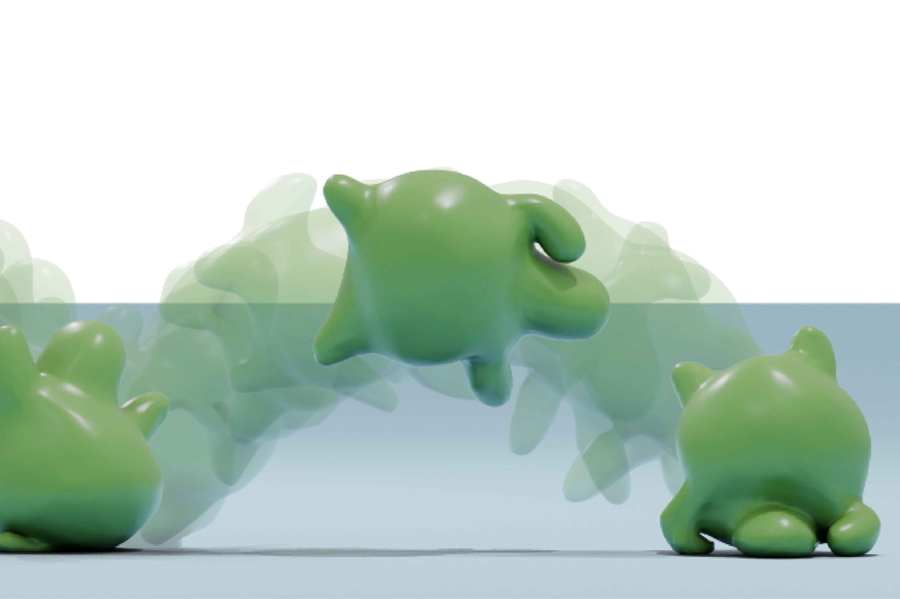
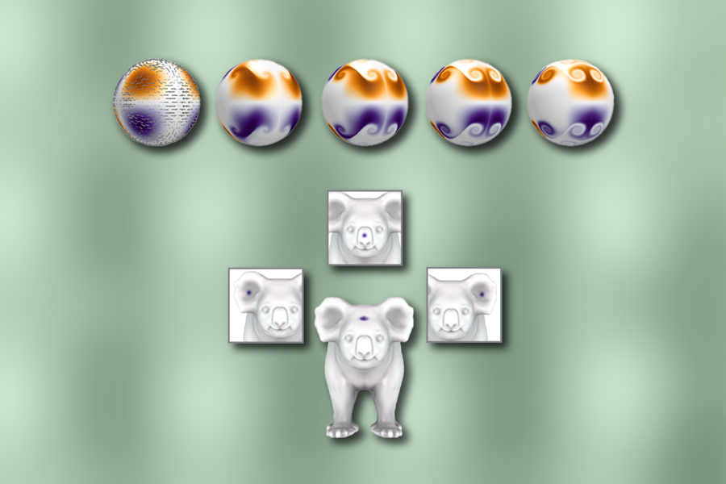

In The Press

Animation technique simulates the motion of squishy objects
By Adam Zewe
June 6, 2025

A framework for solving parabolic partial differential equations
By Alex Shipps
August 28, 2024

EECS graduate women’s annual research summit increases research
visibility and strengthens community
By Rachel Yang
November 30, 2021